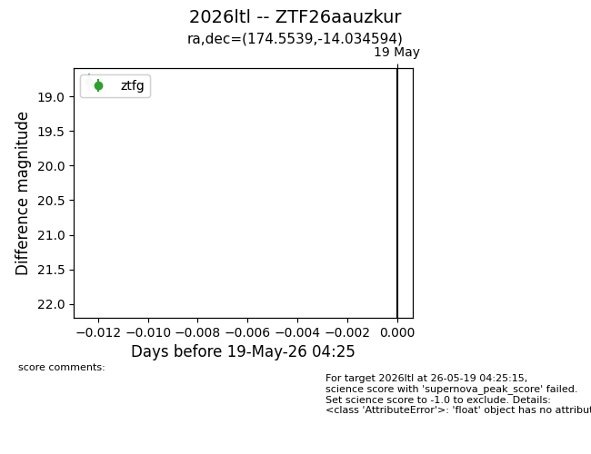
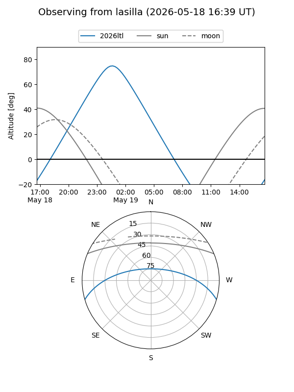
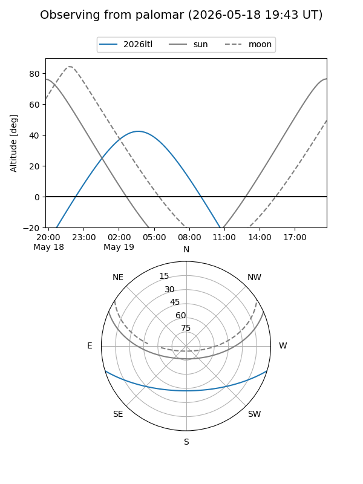
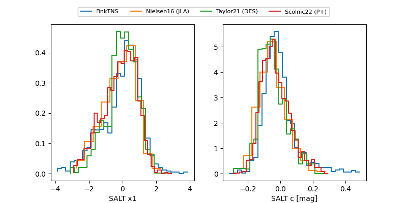

2026ltl
Target 2026ltl at 2026-05-19 04:26
Aliases and brokers:
FINK: link
Lasair: link
ALeRCE: link
TNS: link
YSE: link
alt names
ZTF26aauzkur (ztf,fink_ztf)
2026ltl (tns,yse)
Coordinates:
equatorial (ra, dec) = 174.5539,-14.03459
equatorial (HMS+DMS) = 11:38:12.94,-14:02:04.54
galactic (l, b) = (277.3263,+45.16568)
Flags:
Photometry:
last ztfg=18.79
1 ztfg detections
Lightcurve

Visibility


Additional plots
